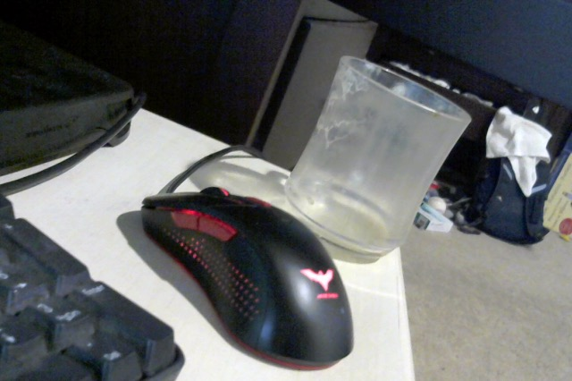

Let us begin with a simple question:
Which item in the following image best represents "Action"?
What have you learned?
For more information on the potential value of philosophy, check out useful philosophy link*
*(what makes buzzfeed such a good website is
that it exactly the kind of hyper-caffeinated,
super busy visual barrage that matches both user
expectations and the philosophy of the web content.
Having a top 20 countdown on a single page might be
problem for conventional news pages, but buzzfeed has a
philosophy and their page layout matches that philosophy)